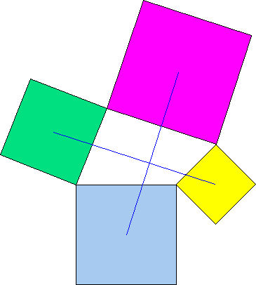
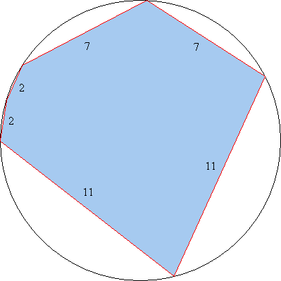

Let n be an integer. Can both n + 3 and n2 + 3 be perfect cubes?
Hint - Answer - Solution
Squares are constructed externally on the sides of an arbitrary quadrilateral.
Show that the line segments joining the centers of opposite squares lie on perpendicular lines and are of equal length.
Hint - Solution
A hexagon with consecutive sides of lengths 2, 2, 7, 7, 11, and 11 is inscribed in a circle. Find the radius of the circle.
Hint 1 - Hint 2 - Answer - Solution
An urn contains a number of colored balls, with equal numbers of each color. Adding 20 balls of a new color to the urn would not change the probability of drawing (without replacement) two balls of the same color.
How many balls are in the urn? (Before the extra balls are added.)
Hint - Answer - Solution
Show that each of the following equations has no solution in integers x > 0, y > 0, n > 1.
Hint - Solution
Show that, if n is an integer, n2 + 11n + 2 is not divisible by 12769.
Hint - Solution
A random number generator generates integers in the range 1...n, where n is a parameter passed into the generator. The output from the generator is repeatedly passed back in as the input. If the initial input parameter is one googol (10100), find, to the nearest integer, the expected value of the number of iterations by which the generator first outputs the number 1. That is, what is the expected value of x, after running the following pseudo-code?
n = 10100
x = 0
do while (n > 1)
n = random(n) // Comment: generates random integer in the range 1...n
x = x + 1
end-doHint 1 - Hint 2 - Answer - Solution
Find all ordered pairs (a,b) of positive integers such that |3a - 2b| = 1.
Hint - Answer - Solution
| Nick Hobson nickh@qbyte.org |